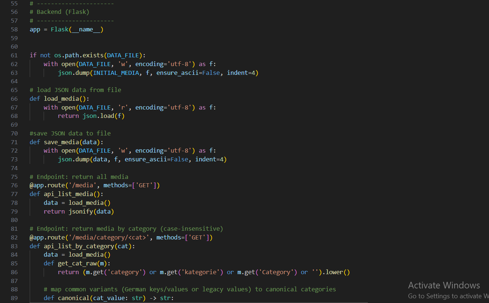
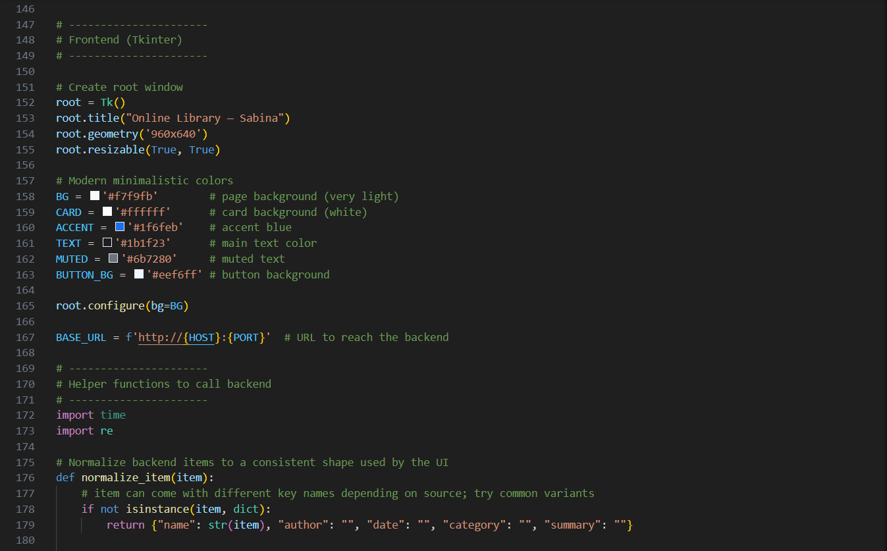
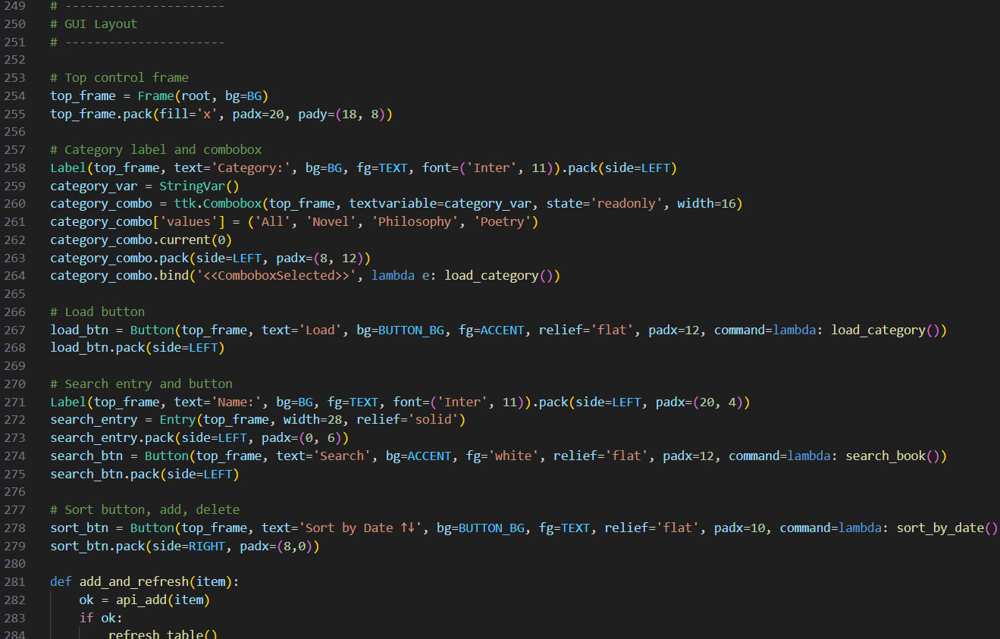
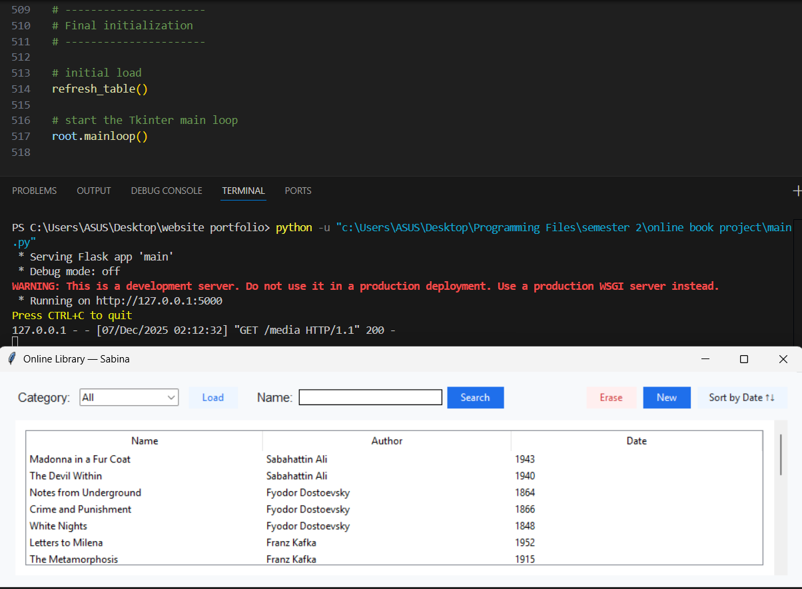

Introducing Sabina's Online Library
As someone who has always escaped into the worlds hidden between book pages,
I wanted to bring a little piece of that magic here. I have gathered some of my all-time favorite books and turned them into a cozy mini-library for you to explore whenever you like.
Take your time, wander through the titles, and if you have read any of them, feel free to leave your own summary or thoughts.
I truly mean it when I say your view matters—every reader brings their own spark and interpretation, and I love seeing how the same story can touch each person differently. Alongside this library,
I would like to guide you through the development of my code and give you a small introduction to who I am and what drives my work. This project brings together my love for reading and my growing skills in programming,
and I am excited to share both sides of that journey with you.


My name is Sabina Ballikaya, I was born and raised in Azerbaijan. My hobbies are playing sports, listening to music, reading and writing.
I am studying Bachelor's degree in Mechatronics Engineering in Berlin. My goal is to have a peaceful life with lots of cats and a small farm, living somewhere close to ocean.

This is my media file, where I have included book names, authors', date of publishment and genre of each book. Having these before anything
else makes it easier to manage the data and call them when needed in the code.
I have used CSV file format because it is easy to read and write, and it is compatible with many programming languages including Python.

The backend of this project is built with Flask, which provides the web server and all API endpoints needed for managing the library. It stores book data in a JSON file (media.json), which acts as the project’s database. The backend includes routes to list all books, search by title, filter by category, retrieve a single book’s details, add new entries, and delete existing ones. Each route sends or receives data in JSON format. Whenever the frontend needs information, it sends an HTTP request to Flask, which processes the request, updates the JSON file if necessary, and returns the correct response. This keeps all data handling centralized and ensures that the library remains consistent and permanently stored.

The frontend of the project is built using Tkinter, Python’s standard GUI toolkit. It provides the visual interface where users can interact with the online library. The GUI includes a table that displays all books, a search bar, category filters, sorting options, and buttons for adding and deleting books. When the user performs an action—such as searching or adding a book—the frontend sends an HTTP request to the Flask backend and then updates the interface based on the response. It also includes popup windows for writing or editing book summaries and for adding new book entries. Tkinter handles all user interactions, while the backend handles the data, making the interface simple, responsive, and easy to use.

The graphical user interface is designed with a clean and minimalistic layout to make the online library easy to use. At the top of the window, a control bar provides the main user actions, including a category dropdown, a search bar, buttons for loading data, sorting by date, adding new books, and deleting selected entries. Below this, the main area contains a table that displays all books with their name, author, and publication date. Users can double-click on any book in the table to open a popup window showing its details and allowing them to write or edit a summary. Additional windows are used for adding new entries, keeping the interface organized and user-friendly. The overall layout is designed to be simple, visually clear, and intuitive, making it easy for users to navigate through the library and interact with the features.

Finally, the overall workflow of the program brings all components together into one smooth system. When the application starts, the Flask backend launches in a background thread and loads the data from media.json. The Tkinter frontend then opens and communicates with the backend through HTTP requests. Whenever the user searches, sorts, adds, deletes, or selects a book, the frontend sends the appropriate request to Flask, which processes the action and updates the JSON file if needed. The frontend then refreshes the displayed data so the user always sees the most up-to-date information. This workflow ensures that the data stays consistent, the interface responds immediately, and both parts of the program work together seamlessly.